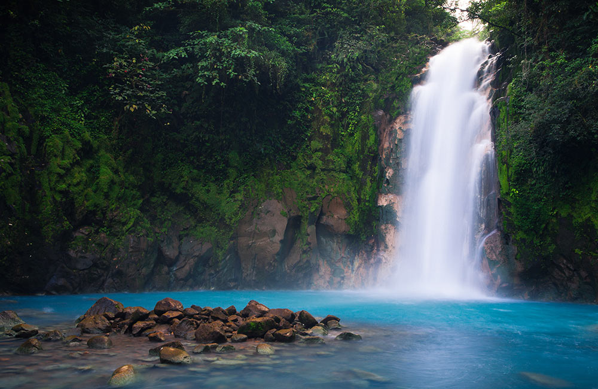
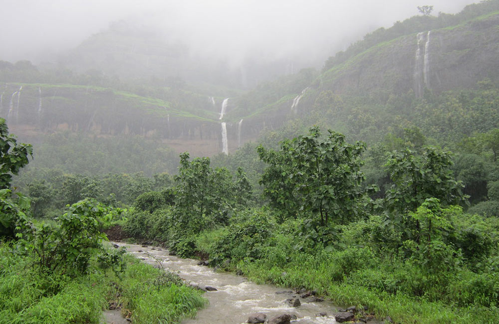
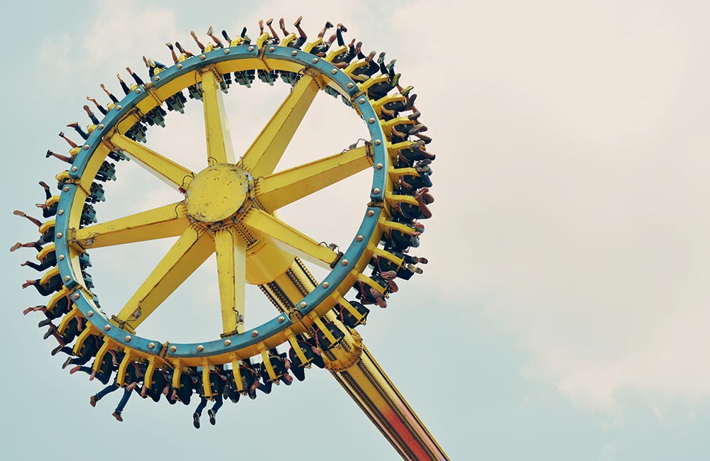

Places to Visit in Khopoli
Albeit an industrial city, Khopoli counts as one of the most popular weekend getaways from Mumbai and Pune owing to its unexplored natural beauty. Thousands of vacationers come to this town in the Raigad district of Maharashtra
- Kune Waterfall, Khopoli

Kune Waterfall near Khopoli is one of the highest cascades in the state of Maharashtra, plummeting from a height of 660 ft. amidst the rocky terrains of the Western Ghats. A breathtaking sight for the onlookers, this fall is sure to soothe your soul with its serenity and unspoiled beauty.
The lush green surroundings complemented by the cool and pleasant atmosphere makes this one of the best places to visit near Pune. So the next time you’re visiting Khopoli, don’t forget to take some time out to witness this amazing waterfall located less than a half an hour drive away
- Location: Khandala, Lonavala
- Timings: 24×7; every day
- Entry Fee: Free entry
- Zenith Waterfall, Khopoli

If you’re visiting Khopoli during the rainy season, you must include Zenith Waterfall in your itinerary. Active from the month of July to September, this seasonal fall attracts tourists owing to its beautiful surroundings. It is around 80-90 ft. high and falls down in a curve due to the strong wind flow.
You can take a private vehicle from the concrete bridge near Khopoli railway station up to this fall or set on a 40 to 50-minute-long trek. The lush greenery, natural vistas, paddy fields and water streams you cross on the trekking trail will make this adventurous experience all the more memorable.
- Location: Zenith Waterfall, Khopoli
- Timings: 24×7; every day
- Entry Fee: Free
- Imagica, Khopoli

Unarguably the pride of Khopoli, Imagica is the first-of-its-kind themed family holiday destination in the country. Within its 130-acre premises are a Theme Park, Water Park, Snow Park, Bollywood Park (House of Stars), 3D+AR Park (Eyelusion), Wonders of the World Illuminated Park (Glowmagica), and a 287-room hotel – the Novotel Imagica.
he Theme Park has some thrilling rides and roller coasters for different age groups along with many thematic shows and a grand parade that is sure to leave you stunned. Head to the Mykonos-themed Water Park to enjoy unique slides or chill at -5⁰C in 100% real snow at the 15,000 sq. ft. Snow Park. A glimpse of B-town’s magical moments is what you’ll get at House of Stars while Eyelusion will let you explore some amazing, visual illusions.
- Location: Sangdewadi, Khopoli-Pali Road, Khopoli
- Timings: 10:00 AM – 11:00 PM
- Entry Fee: 1200rs
Back To Home